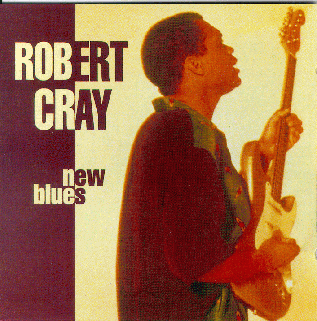

New Blues - Robert Cray

 Songs on the CD
Songs on the CD
- Who's Been Talkin' ( C. Burnett)
- Nice As A Fool Can Be (R. Cray)
- If You're Thinkin' What I'm Thinkin' (R. Cray)
- The Welfare (Turns Its Back On You) (S. Thompson - L. Weaver)
- I'm Gonna Forget About You (O.V. Wright)
- Sleeping In The Ground (S. Myers)
- Too Many Cooks ( W. Dixon)
- I'd Rather Be A Wino (D. Amy - R. Cray)
- The Score (D. Amy)
- That's What I'll Do (R. Cray)
This is yet another edition of Who's been Talking
and Too Many Cooks produced by the Hallmark Records
in the UK. Many thanks to Jim for getting me a copy!
Back to my Cray page
Created: 11/23/99
By: rwhiffen
Mod: 11/23/99